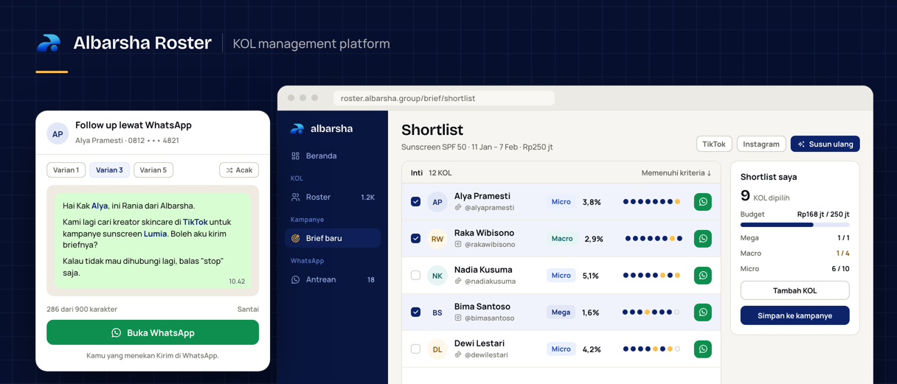

albarsha Roster
Platform manajemen KOL untuk Albarsha Group
Satu roster untuk semua KOL, shortlist yang disusun dari brief brand, follow-up WhatsApp dari template, dan pipeline kampanye per KOL.
Ini pratinjau statis. Halamannya diambil dari aplikasi yang berjalan, dengan data fiktif: nama KOL, brand, rate, dan angka dibuat sebagai contoh. Navigasi antarhalaman berfungsi; tombol dan formulir tidak.
Buka Beranda

RINGKASAN
KOL
RosterSatu daftar KOL dengan filter, tier otomatis, dan tombol WhatsApp di nomor.Profil KOLStatistik per platform, audiens, rate card, kontak, dan log pesan.Kategori & tag16 kategori utama, sub-kategori, dan batas tier yang bisa diubah.
KAMPANYE
Brief baruIsi kebutuhan brand: tujuan, budget, komposisi tier, dan kriteria.ShortlistHasil dari brief: memenuhi N dari 8 kriteria, dengan bukti untuk tiap kriteria.KampanyeSemua kampanye dengan tahap KOL dan budget terpakai.PipelineKanban per kampanye: Listing sampai Tayang.Daftar KOLSOW, rate nego dan rate lock, TOP, dan status bayar per KOL.Versi klienHalaman publik untuk klien, tanpa catatan internal, PIC, atau nomor.
Antrean follow-upSiapa yang perlu dihubungi hari ini, dan alasannya.Follow up WhatsAppPesan dari template, diacak per KOL. Staf yang menekan Kirim.Template pesan36 template dalam 10 situasi, dengan statistik varian.